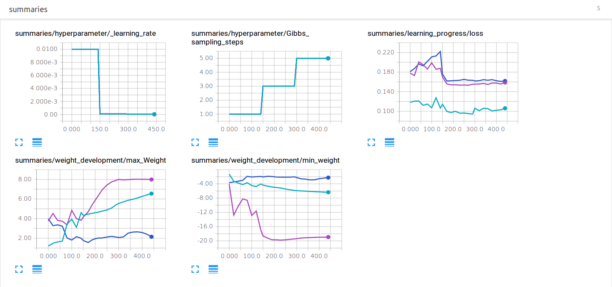
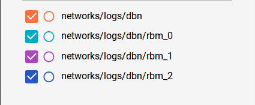

Get Started with Tensorflow¶
Installation¶
This part of the program mainly uses Tensorflow and numpy with python 3.5. Tensoflow can be installed via pip install. Additional installation methods can be found at Tensorflow.org. Tensorflow offers additional support for NVIDIA GPUs. If you want to run this program on NVIDIA GPUs it should be working but this code is only programed and tested for CPUs.
Basic usage of Tensorflow¶
To get a better understanding of Tensorflow we take a look at program example from Tesorflow.org.
First Tensorflow and numpy have to be imported.:
import tensorflow as tf
import numpy as np
Then we create our input data and the desired output. These are saved as numpy arrays. Numpy arrays can be easily converted into Tensorflow variables.
Next we specify the Tensorflow variables we want to use. In this case we create one weight and one bias variable. For the initial values of W and b we use helper functions, which create a numpy array for us.:
# helperfunction creates a numpy array with random initial values
W = tf.Variable(tf.random_uniform([1], -1.0, 1.0))
# helperfunction creates numpy array with zero values
b = tf.Variable(tf.zeros([1]))
Next we specify the computation Tensorflow should perform. But this listing of commands isn’t executed yet. We are only building a computation graph. Later Tensorflow optimizes the graph and compiles it in a C language for maximum efficiency.:
y = W * x_data + b
The variable y defines the prediction of the network. To correct the prediction we use a built in optimizer, which minimizes our error.:
loss = tf.reduce_mean(tf.square(y - y_data))
optimizer = tf.train.GradientDescentOptimizer(0.5)
train = optimizer.minimize(loss)
Now that our computation graph is complete we let Tensorflow run it. But first we initialize our variables.:
init = tf.global_variables_initializer()
sess = tf.Session()
sess.run(init)
The session is an abstract object which helps us managing our computations. With sess.run(init) the init node is run. Within this session our variables are initialized.
In a simple for loop we now can run our training-graph.:
for step in range(201):
sess.run(train)
if step % 20 == 0:
print(step, sess.run(W), sess.run(b))
Like the sess.run(train) the sess.run(W) evaluates the W variable and returns a numpy array which represents the values saved in W. During the training the variables learn to fit the values W: [0.1], b: [0.3].
Further reading¶
For a more in depth tutorial about Tensorflow you can check out the MNIST tutorial for beginner and for experts.
Tensorflow Mechanics 101 presents you additional features of Tensorflow.
Tensorboard¶
Tensorboard is a tool which is included in Tensorflow. With Tensorboard you can visualize your training data. In our project we used Tensorboard to keep track of our accuracy, loss and weight development. Additionally it visualized our computation graph.
To use Tensorboard, especially to visualize some of our test runs go to the logs directory in our project and open a Terminal in one of the contained folders. Then type the command.:
tensorboad --logdir .
In the following image you can see the progress of 3 restricted Boltzmann machines during pretraining with a MNIST dataset:
 We added also some of the hyperparameters to the observed variables. So we could directly link the loss to the corresponding hyperparameters. As we can see when the training starts the loss is jumping up and down but the trend is a decreasing loss. After some time the loss is stabilized. Even an increasing Gibbs sampling rate can’t change that. Two other important graphs are the maximal and minimal weights. As the training progresses the absolute value of the maximal and the minimal weight are getting higher. That isn’t a development we want. Optimally the weights should always stay between -1 and 1. One explanation could be that we are overtraining because our loss is stuck but we keep training. That forces some weights to become extremely big or small. Even the weight decay regulation can’t stop that.
In the next image is one of the RMB’s computationgraphs visualized by Tensorboard:

This is the main part of the learning procedure of our RBM. As you can see the x-input and the weights and biases perform a Gibbs sampling step. The information on how the function works is currently hidden to make the presentation easier to understand. With the first sampling step the positive association can be calculated. And the value is later used to calculate delta. The thicker the line the more data is flowing between the nodes.
To create our own visualizations in Tensorflow we need to tell Tensorflow which information are important. In the following code block are the summary_nodes we used to create these graphs.:
with tf.name_scope('summaries'):
with tf.name_scope('learning_progress'):
tf.summary.scalar("loss", self._tf_loss_function)
with tf.name_scope('weight_development'):
tf.summary.scalar("max_Weight", tf.reduce_max(self._tf_w))
tf.summary.scalar("min_weight", tf.reduce_min(self._tf_w))
tf.summary.histogram("delta_weights", self._tf_delta_w)
tf.summary.histogram("weights", self._tf_w)
with tf.name_scope('hyperparameter'):
tf.summary.scalar("_learning_rate", self._learning_rate)
tf.summary.scalar("Gibbs_sampling_steps", self._gibbs_sampling_steps)
I used Tensorflows namespace to section them. The same namespaces are used in the computation graph to abstract information from the user.:
with tf.name_scope('learning_process'):
with tf.name_scope('gibbs_sapmling_step'):
#first Gibbs sampling step
with tf.name_scope('_compute_positive_association'):
# positiv association
with tf.name_scope('gibbs_sampling_steps'):
# n-1 additional Gibbs sampling steps
with tf.name_scope('compute_negative_association'):
# negative association
with tf.name_scope('calculate_delta_weights'):
# delta weights
with tf.name_scope('update_weights'):
# weight updates
The information of the summary nodes is evaluated by the call of merge_all_summarys and written to a file by Tensorflow.FileWriter
self._tf_merged_summaries = tf.summary.merge_all()
# later the node is run
loss, summary_str = self._tf_session.run([self._tf_loss_function, self._tf_merged_summaries],
feed_dict=self._create_feed_dict(train_set))
# and saved in a directory by tf.train.Summary_writer
self._tf_summary_writer = tf.train.SummaryWriter(self.summary_dir, self._tf_session.graph)
self._tf_summary_writer.add_summary(summary_str, epoch)
If we specify the Tensorflow graph, the computationgraph is visualized in Tensorboard as seen above.
Loading and Saving a model¶
Another feature Tensorflow is providing, is that it let us save our training progress and we can reload them at any time.
To use this handy feature we first initialise a Tensorflow.Saver object within our session.
# create the variables beforehand
with tf.Saver() as self._tf_saver:
self._tf_saver = tf.train.Saver()
Then we can save every variable in our session to the specified path.
self._tf_saver.save(self._tf_session, "path/to/save_dir/model_name")
We can have as many Saver objects as we want and also specify which variables should be saved.
But here we stick to the basics and just load all variables we saved.
# the viriables have to be created but not yet initialised
self._tf_saver.restore(self._tf_session, path/to/save_dir/model_name)
This loading and saving is used in every of our networks. They save their model only if they completed the task. If an error occurred before they finished all training progress is lost. Our networks can only load the newest changes in the network. All previous states are lost.